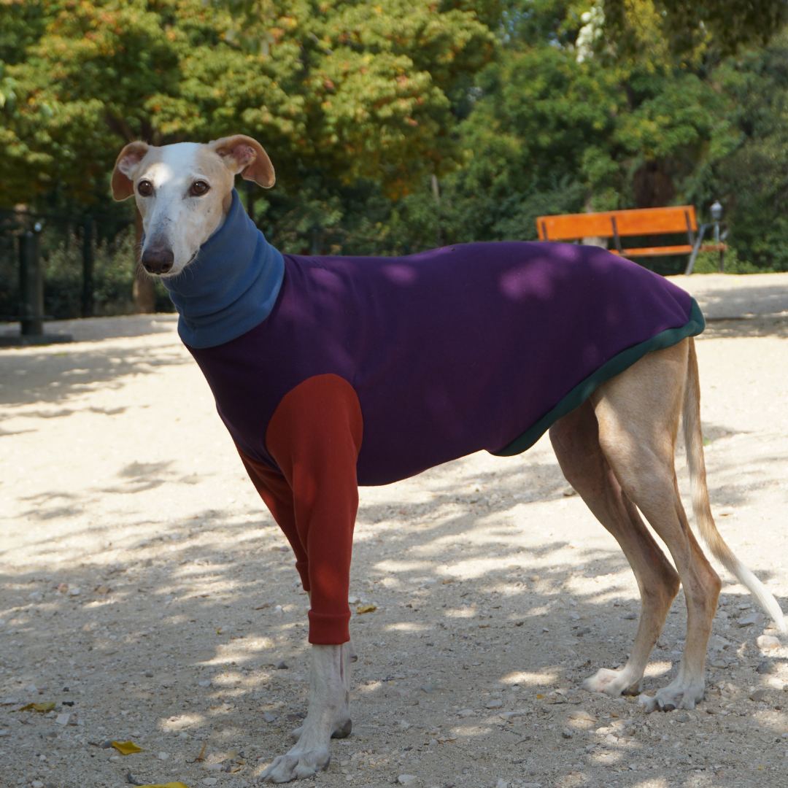
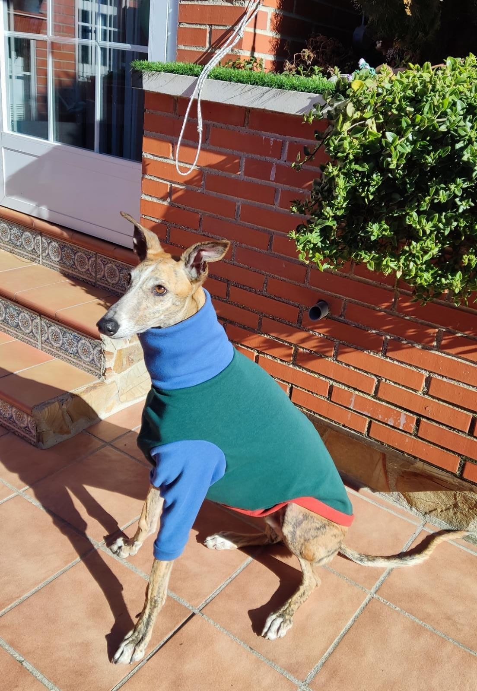
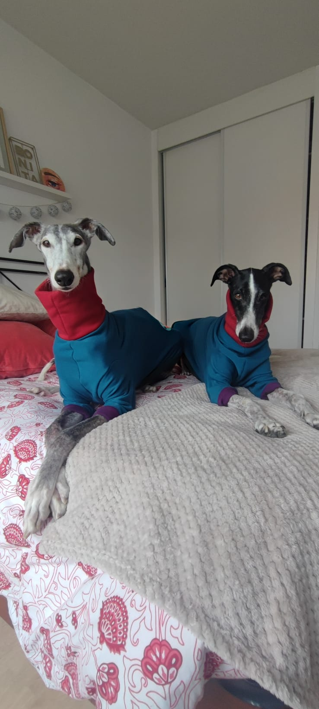
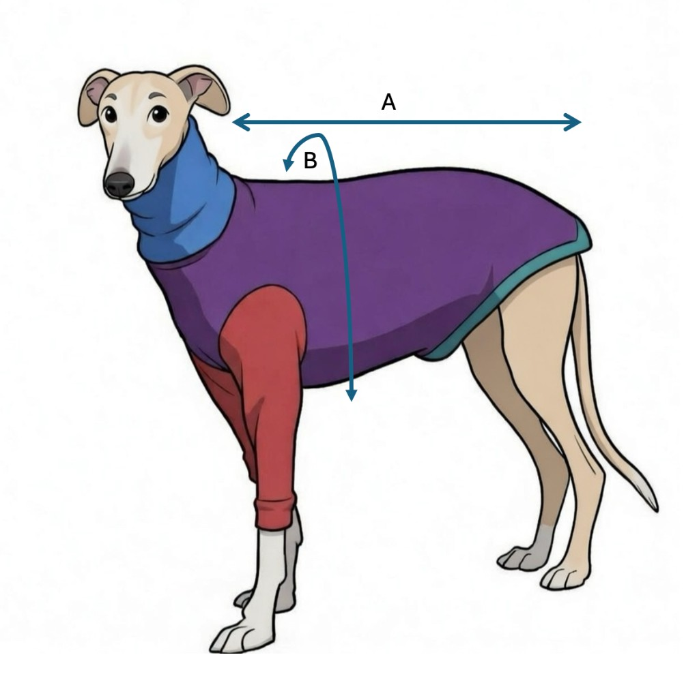

Jersey manga larga
40€
Mayor cobertura y calidez para los días más frescos. El jersey de manga larga ofrece protección completa para las patas delanteras de tu galgo, ideal para paseos en días fríos o para descansar en casa.
Características
- Cobertura completa: Mangas largas que protegen las patas delanteras
- Tejido premium: Algodón orgánico con elastano para máximo confort
- Diseño ergonómico: Corte especial para el pecho profundo del galgo
- Fácil de poner: Abertura amplia que facilita vestir a tu galgo
Materiales
95% Algodón orgánico, 5% Elastano. French terry de peso medio, suave por dentro.
Cuidados
Lavar en frío. Secar al aire. No usar secadora.
Selecciona tu talla
Razas compatibles
Galgo español, Galgo inglés (Greyhound), Whippet grande, Lurcher, Podenco, Galgo italiano grande
Guía de tallas
Cómo medir a tu galgo

A: medida desde la punta del cuello hasta la punta de la cola.
B: circunferencia del pecho por el lado que sea más grande.
| Talla | Pecho (cm) | Largo (cm) | Peso aprox. |
|---|---|---|---|
| S | 58 - 66 | 55 - 62 | 20 - 26 kg |
| M | 66 - 74 | 62 - 70 | 26 - 32 kg |
| L | 74 - 82 | 70 - 78 | 32 - 38 kg |
Consejos de ajuste
- Elige la talla basándote en la medida del pecho de tu galgo.
- Si tu galgo está entre dos tallas, elige la talla superior.
- Los jerseys de manga larga ofrecen mayor protección en días fríos.
- Para poner las mangas, sujeta la pata de tu galgo y guíala suavemente por la manga hasta el puño.